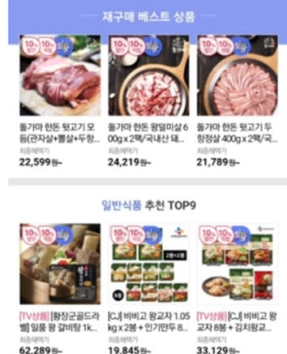
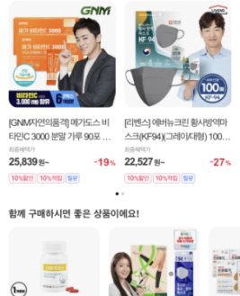
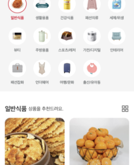

Project 05 · User Research · Personalization
큐레이션 전문관 리뉴얼 및 알고리즘 고도화
개요
개인화 상품 추천을 강화하여 구매 결정에 드는 개인의 시간과 인지적 노력을 최소화하고, 반복적 UI에서 탈피해 고객의 흥미를 제고.
문제
- 큐레이션 영역의 구매 효율(CVR)은 전체 영역 대비 105% 높음에도, 반복적 UI / 단순 상품 배열로 흥미·하위 카테고리 접근성 저하
- UT 결과 응답자의 46.7%가 "베스트 상품을 추천"해줄 것으로 예상 — '추천관'이 단순 추천 매장으로 오인지되는 문제
가설
UT 100명을 통해 추천관에 대한 유저 기대를 파악, 개인화 매장임을 고취하는 방향으로 리뉴얼하면서 대체재 위주의 추천에서 보완재 중심의 '미래 예측 기반 큐레이션' + 행동 데이터 기반 배열을 도입하면, 추가 구매(Cross-selling)가 활성화될 것이다.
기여
- 데이터 기반 영역 확장 — 재구매 큐레이션 영역 상품 전시 30% 확대 (CVR 기준)
- 추천 적중도 알고리즘 개선 — 보완재 중심 큐레이션 로직 설계 (예: 마라소스 조회 → 대체재가 아닌 '당면·건두부'를 함께 추천하여 추가 구매 유도)
- 고객 행동 데이터 기반 카테고리 배열 재정립 — 구매·최근 본 상품 등 시그널 활용
- 최근 검색어 연관 추천 영역 신설
- 카테고리 네비게이션화 — 하위 카테고리 접근성 개선
Impact
- 전년 동기 대비 큐레이션 전문관 전체 CVR +16.7%
- 추천관 리뉴얼 전후 6개월 비교 월평균 주문 건수 +22.4%, 주문 금액 +17.5%
Reflection
추천 기획에서 가장 임팩트가 큰 변수는 "어떤 데이터를 보느냐"가 아니라, "어떤 종류의 관계(대체재 vs 보완재)를 모델링하느냐"였다.
관련 화면
AS-IS · 기존

반복적 UI · 단순 배열 · 대체재 위주 추천으로 Cross-selling 제한
TO-BE · 리뉴얼

재구매 큐레이션 영역 확대 및 미래 예측 기반의 큐레이션 서비스 도입
TO-BE · 리뉴얼

고객 행동 데이터 기반 개인화된 카테고리 네비게이션 도입